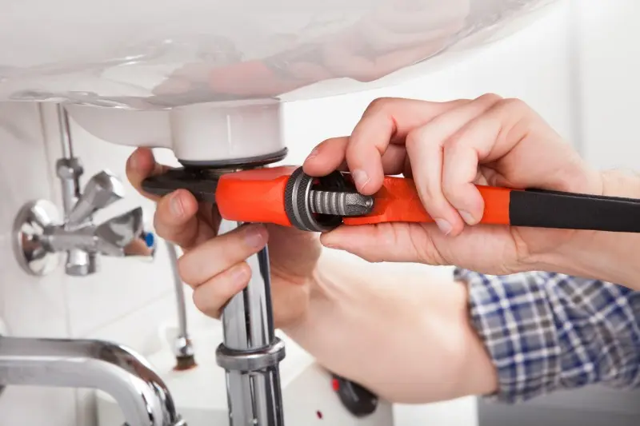
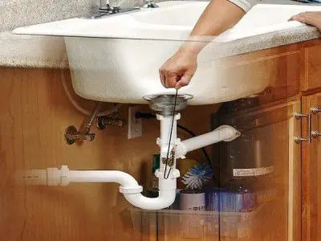

Société de Débouchage Evier et lavabo Casablanca
Société de Débouchage Evier Débouchage d'évier et lavabo, le service de débouchage d’évier et lavabo Il ne faut jamais laisser un évier ou lavabo bouché, il peut rapidement engendrer une inondation ou abimer durablement vos canalisations. Nous intervenons en urgence, dans les plus brefs délais à Paris pour le débouchage de votre évier ou lavabo, sur simple appel ou message déposé sur notre site.
Société de Débouchage Evier
le service de débouchage d’évier Tous nos devis sont gratuits et vous permettront de réaliser très rapidement que ce type d’intervention est accessible à moindre coût. N’hésitez pas à prendre contact avec l’un de nos artisans plombier diplômés pour assurer le débouchage de votre évier ou lavabo. Les parties de l’évier ou du lavabo qui peuvent causer un bouchon.
Le premier signe d’un bouchon est le refoulement des eaux usées et l’accumulation de celle-ci dans la cuvette. Vous devez alors contacter un plombier pour ne pas garder les eaux sales en surface. Il arrive que les obstructions soient difficiles à détecter.
L'intervention de débouchage d'évier ou de lavabo
Il est sage de recommander à chaque client de faire un entretien régulier des canalisations pour éviter toutes les mauvaises surprises. En effet, le manque d’entretien sur le système d'évier ou de lavabo est l’une des principales causes de bouchon.
Nos artisans sont spécialisés en débouchage d’évier et lavabo. Leur expérience vous assure un débouchage rapide, professionnel et durable. Nos clients nous recommandent car nos plombiers professionnels connaissent leur travail et interviennent rapidement.
Il existe plusieurs conduits dans le système de tuyauterie d’un évier ou d’un lavabo. Les zones qui sont les plus susceptibles d’être boucher sont surtout le siphon, le tuyau d’arrivée d’eau et le conduit d’évacuation. Ces derniers sont les parties qui risquent d’accumuler des déchets. Aussi, votre artisan plombier va vérifier ces endroits en premier lors de son dépannage. Il décidera ensuite d’effectuer un débouchage d'évier ou lavabo en fonction du problème et de la source du bouchon.
Société de Débouchage Evier
Nous utilisons du matériel professionnel et recommandé par tous les plombiers spécialisés en débouchage d’évier et lavabo permettant une intervention de qualité et durable à un prix très compétitif. Les outils et instruments que le plombier utilise respectent les normes européennes et internationales. Vous n’aurez donc pas à vous soucier de vos sanitaires, une fois que le plombier aura terminé son intervention.
Le débouchage d'évier et lavabo à Paris
Pourquoi demander de l’aide à un plombier lorsque vous êtes face à un problème de bouchon ? C’est simple, le plombier est un spécialiste en système sanitaire. Il a étudié ses canalisations pour pouvoir intervenir et opérer sur ces dernières sans les endommager. Pour fournir un travail de qualité, les artisans d'Art Plomberie Paris s’entrainent sous le patronage et le parrainage des maîtres plombiers. De cette façon, il récolte des années d’expérience ainsi que des techniques pour les opérations diverses. Par exemple, pour le débouchage d'un évier et lavabo, l'artisan doit pouvoir repérer et retirer l'obstruction en moins de deux heures pour donner une entière satisfaction au client. Société de Débouchage Evier Société de Débouchage Evier